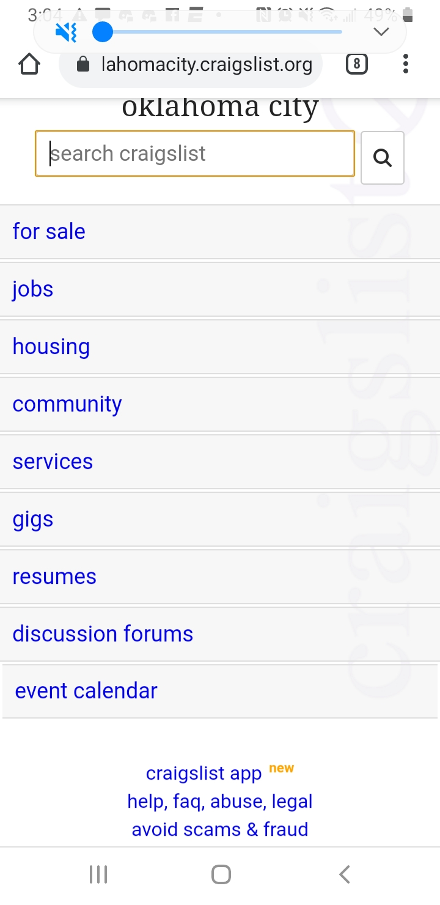
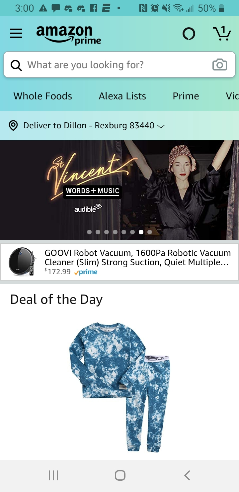

Fitt's Law
youtubeThe reason I chose the youtube homepage is because the buttons or menu options are easy to click and dont take up literally half the page. The buttons are also proportional on the usage for example the videos are bigger because they want to entice you into watching them.
Repetition
craigslist The reason why Craigslist was chosen is becasue there is two things I want to look at. One the font is the same it doesnt change. The second detail is that the menu is not that different there is a decent looking repetitive menu options.
Proximety
amazon The reason I chose amazon for Proximety is because I want to look at the navigation bar. Each of the tabs lead to the topic or type of category that a shooper is looking for.